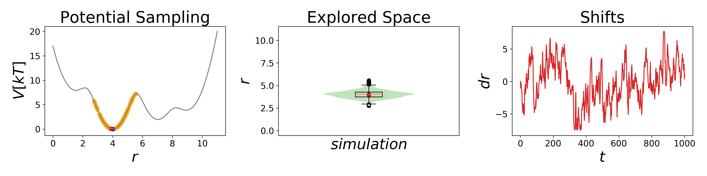

Welcome to Ensembler¶

Description¶
Ensembler is a python package that allows fast and easy access to one and two-dimensional model systems simulations. It enables method development using small test systems and to deepen the understanding of a broad spectrum of molecular dynamics (MD) methods, starting from basic techniques to enhanced sampling and free energy calculations. It is easy to install, fast, increases shareability, comparability, and reproducibility of scientific code developments. Here, we provide insights into the package’s implementation, usage, and an application example for free energy calculation.
Contents¶
The full documentation can be found here: https://rinikerlab.github.io/Ensembler/
potentials - Potential Energy Functions¶
Implement mathematical functions of interest for modeling purposes, for example, in chemistry. Implementation of new potential energy functions is straightforward, as there are only a few functions that need to be overwritten. Implemented Potentials: Harmonic Oscillator, Wave functions, etc. Also, different dimensionalities can be used, like 1D, 2D, and ND.
samplers - Sampling Methods¶
This module provides integrators for integrating potential functions. E.g., Monte Carlo, Velocity Verlet.
systems - Used for Simulations¶
This module is used to set up a simulation with a system class that contains a potential energy function and a sampling method, plus optional other parameters.
ensemble - Multi Replica Approaches¶
This module contains the implementation of the ConveyorBelt and will contain in future additional Replica Exchange approaches.
visualization¶
This module contains predefined visualization, animation and widget functions.
analysis¶
This module contains at the moment Free Energy Calculations.
Tutorials and Examples:¶
You can try Ensembler online via the binder links below or on your machine with our provided jupyter notebooks showing use cases for Ensembler with visualizations. The Binder links might take some time to build the repo; depending on the traffic, it can take up to 10 minutes to be built.
Tutorials¶
- We provide short introductions into how potential energy functions can be used and sampled in simulations
in Ensembler with the jupyter notebooks in the example folder that can be also accessed by the binder links.
Here is an small example of a simple simulation:
CODE:
##Imports
from ensembler.potentials.OneD import fourWellPotential
from ensembler.samplers.stochastic import langevinIntegrator
from ensembler.system import system
from ensembler.visualisation.plotSimulations import oneD_simulation_analysis_plot
##Simulation Setup
V = fourWellPotential(Vmax=4, a=1.5, b=4.0, c=7.0, d=9.0, ah=2., bh=0., ch=0.5, dh=1.)
sampler = langevinIntegrator(dt=0.1, gamma=10)
sys = system(potential=V, sampler=sampler, start_position=4, temperature=1)
##Simulate
sys.simulate(steps=1000)
##Visualize
positions = np.linspace(start=0, stop=10, num=1000) #phase space to be visualized
oneD_simulation_analysis_plot(system=sys, title="Langevin Simulation", limits_coordinate_space=positions)
OUT:
{kind=link}
In the following links you can find more features of Ensembler.
Potentials:
Simulations:
Examples¶
Examples are advanced jupyter notebooks, covering a specific topic, going deeper into the methodology and having nice visualizations.
Enhanced Sampling:
Free Energy Calculations:
Interactive ConveyorBelt:
EDS-Potentials:
How To Install¶
There are many ways to get the Ensembler package.
If you want to use Ensembler (don’t forget to download the examples):
pip install ensembler-rinikerlab
If you want to use Ensembler, see the example notebooks or develop Ensembler:
git clone https://github.com/rinikerlab/Ensembler.git cd Ensembler python setup.py install
If you want to use Ensembler, see the example notebooks or develop Ensembler - but not install the package: Add the path to the Ensembler repository; the requirements needed for the package can be used like in the following examples:
PIP:
git clone https://github.com/rinikerlab/Ensembler.git cd Ensembler export PYTHONPATH=${PYTHONPATH}:${PWD} pip install -r devtools/pip_requirements/requirements_unix.txtAnaconda:
git clone https://github.com/rinikerlab/Ensembler.git cd Ensembler conda create -n Ensembler --file devtools/conda-envs/environment_unix.yml conda activate Ensembler
For windows, we also provide the required files in the same folders:
devtools/pip_requirements/requirements_windows.txt
devtools/conda-envs/environment_windows.yml).
Contributing¶
If you would like to contribute to Ensembler, you are most welcome! Just raise an issue or write us a mail.
Authors¶
Benjamin Ries; Stephanie M. Linker; David F. Hahn
Copyright¶
Copyright (c) 2020, Benjamin Ries, Stephanie M. Linker, David F. Hahn
Acknowledgements¶
Project-based on the Computational Molecular Science Python Cookiecutter version 1.3.